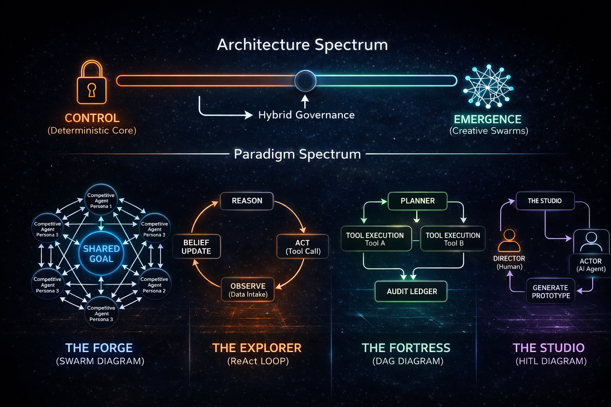

From deterministic enterprise fortresses to emergent creative swarms. We design digital workforces bounded by physics, mathematics, and operational risk.
Intelligence must be bounded by operational risk. LLMs are brilliant, probabilistic reasoning engines (Neural), but they are fundamentally unpredictable. Real-world platforms require an architecture that bridges this creativity with strict, math-based rules and hard-coded constraints (Symbolic). We scale the ratio of "Neural Exploration" to "Symbolic Control" based entirely on the liability of your industry.
Use Case: Healthcare, FinOps, Manufacturing.
In high-stakes environments, the "Planning Rubicon" must be crossed. The LLM acts purely as a Strategist, distilling its intent into a Directed Acyclic Graph (DAG). Execution is handled by stateless tools governed by Policy-as-Code. There is zero room for autonomous drift.
# The Shield mathematically blocks illegal nodes.
package enterprise.governance
default allow_commit = false
# Block ERP updates if variance exceeds 5%
deny_commit[msg] {
input.action == "UPDATE_ERP_LEDGER"
input.logistics_variance > 0.05
msg := "FATAL: AI plan exceeds financial risk tolerance."
}Use Case: Ad-Tech, Marketing, Creative Strategy.
When ROI depends on continuous novelty, rigid DAGs fail. We deploy competitive multi-agent swarms utilizing stochastic persona mapping. Agents debate and generate diverse outputs, constrained not by firewalls, but by live performance data.
Use Case: Scientific Research, Alpha Generation, Data Mining.
For open-ended discovery, we release the constraints. The Forager utilizes self-directed ReAct (Reason + Act) loops to explore massive unstructured datasets, updating its internal "Belief State" dynamically as it encounters new information.
# Standard ReAct loop updating a belief state.
[THINK] "I need to cross-reference Metformin with mTOR pathways."
[ACT] search_pubmed(query="Metformin AND mTOR inhibition")
[OBSERVE] "Found 412 papers. Abstract 1 implies direct causality."
[BELIEF_UPDATE] "Modifying graph node weight: +0.45 causality."
[THINK] "Now, I should check ClinicalTrials.gov for active phases..."Use Case: Software Engineering, Content Production, UI/UX.
A collaborative dance between human creativity and AI scale. This architecture implements Human-In-The-Loop (HITL) Reflexion loops, where the system acts as an autonomous "Actor" generating prototypes, and the human acts as the "Director" providing soft-constraint feedback.

Whether you need a high-liability deterministic fortress or an exploratory multi-agent swarm, let's build the right foundation.
Request an Architecture Consultation